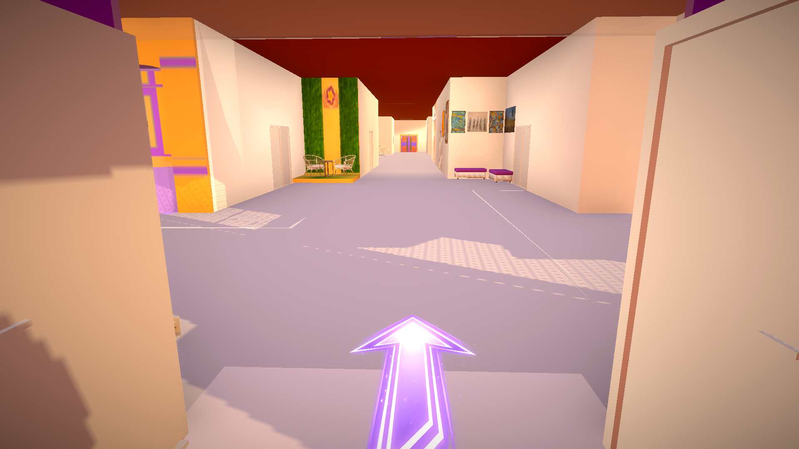
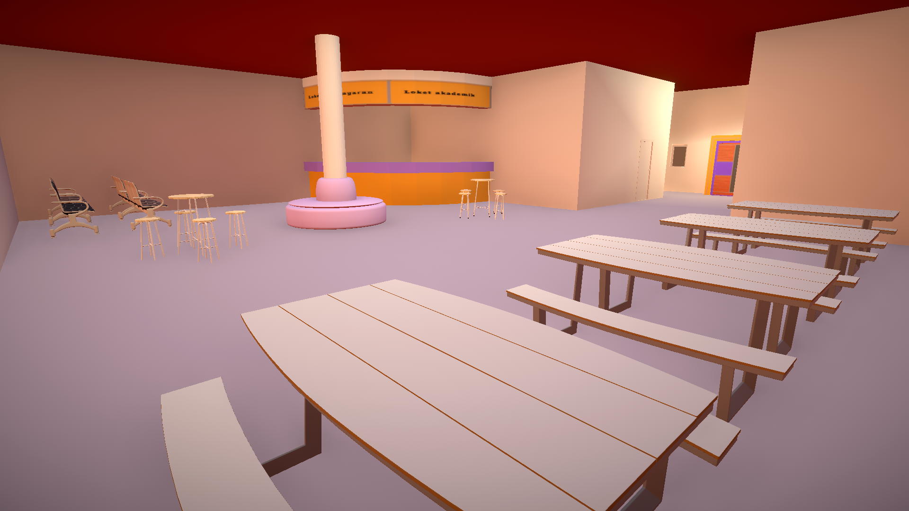
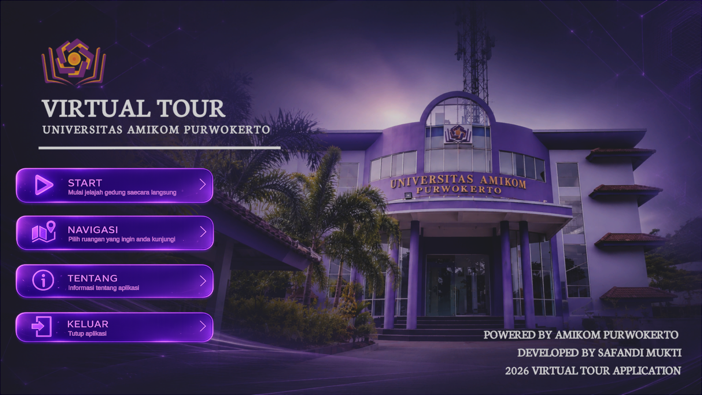
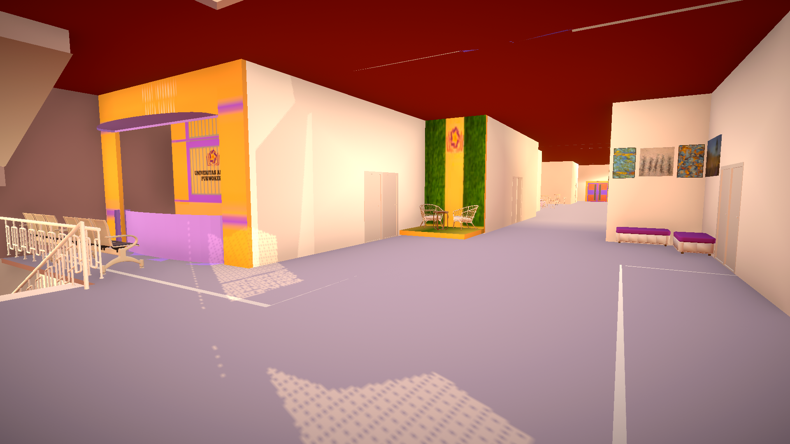
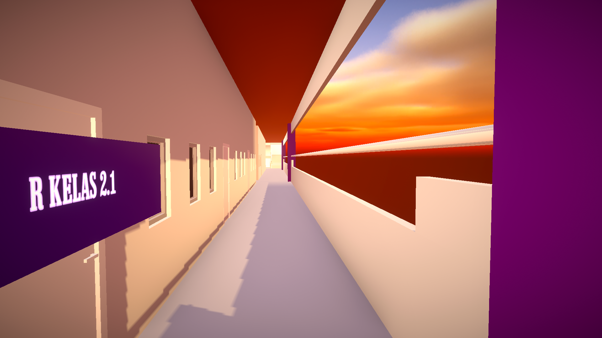
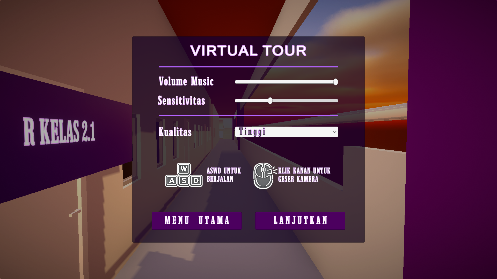

Atasi masalah disorientasi ruang (wayfinding) melalui simulasi penjelajahan dunia virtual yang dibangun akurat dari koordinat arsitektur asli. Temukan ruangan kelas, laboratorium, dan ruang administrasi secara praktis.
Tentang Aplikasi
Keterbatasan papan pengumuman konvensional cetak memicu timbulnya kendala orientasi arah bagi civitas akademika baru. Aplikasi Virtual Tour Gedung 1 ini dibangun guna menyediakan sarana pengenalan lingkungan kampus yang mandiri, adaptif, serta informatif.
Mendukung orientasi ruang secara fleksibel tanpa perlu didampingi petugas.
Letak ruangan dan bentuk koridor merepresentasikan kondisi asli gedung.
Dapat dioperasikan penuh tanpa membutuhkan jaringan internet.
Disediakan secara gratis untuk membantu mahasiswa baru dan pengunjung.
Fitur Utama Aplikasi
Mekanisme penjelajahan bebas dengan sudut pandang orang pertama menggunakan skema kontrol pergerakan karakter desktop standar.
Sistem pemandu rute berbasis titik jalur (Waypoint). Memunculkan petunjuk arah berupa panah dinamis (Arrow Indicator) di lantai.
Panah Penunjuk Arah OtomatisPemanfaatan komponen *trigger collider* di area pintu. Papan nama virtual 3D otomatis muncul melayang saat didekati.
Deteksi Jarak OtomatisDapat diakses sewaktu-waktu lewat tombol ESC. Menyediakan opsi pengatur sensitivitas mouse, volume audio, serta grafik.
Rendah · Sedang · TinggiGaleri Aplikasi






Video Demonstrasi
Kebutuhan Perangkat
Aplikasi bersifat portable dan dijalankan secara mandiri tanpa proses instalasi berbelit.
Halaman Unduhan Aplikasi
Unduh paket data kompilasi akhir aplikasi berekstensi versi terbaru.
Virtual Tour Gedung 1 (Build Akhir)
Versi 1.0.0 · Standalone Windows (.exe)
Halaman Publikasi
Riset tugas akhir ini menerapkan metodologi MDLC (Multimedia Development Life Cycle) untuk menyelesaikan kendala penjelajahan tata letak ruang (Wayfinding). Pengujian Usability lewat SUS meraih skor 77,75 (Kategori Good).
FAQ
Tidak, aplikasi virtual tour ini dipublikasikan secara gratis untuk keperluan orientasi mandiri mahasiswa baru, calon mahasiswa, serta seluruh pengunjung lingkungan Universitas Amikom Purwokerto.
Sama sekali tidak. Setelah folder arsip berhasil Anda unduh dan ekstrak ke komputer, seluruh fungsi navigasi panah dan roaming 3D dapat berjalan 100% offline tanpa kuota internet.
Anda bisa menekan tombol ESC di keyboard kapan saja untuk memicu panel pause menu. Pada bagian dropdown kualitas grafis, ubah opsi dari Tinggi menjadi Sedang atau Rendah guna menyesuaikan spesifikasi kartu grafis perangkat Anda.
Buka panel antarmuka menu navigasi, pilih salah satu nama ruangan target, lalu ikuti petunjuk panah ungu bercahaya (*arrow indicator*) yang muncul otomatis menyusuri permukaan lantai koridor sampai depan pintu tujuan.
Untuk kompilasi build rilisan versi saat ini, aplikasi dikemas khusus berupa file eksekusi (*standalone architecture*) untuk sistem operasi komputer Windows tipe arsitektur 64-bit.
Informasi Kontak